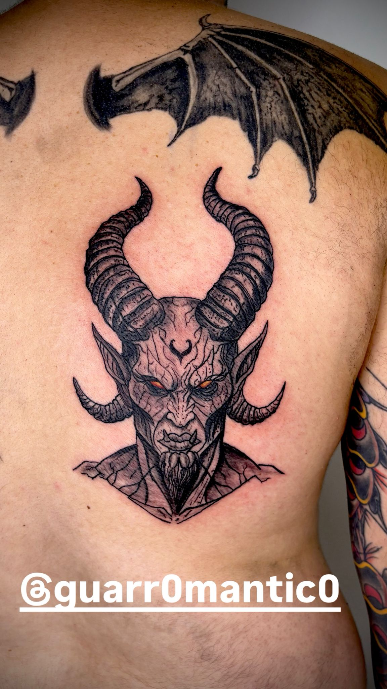
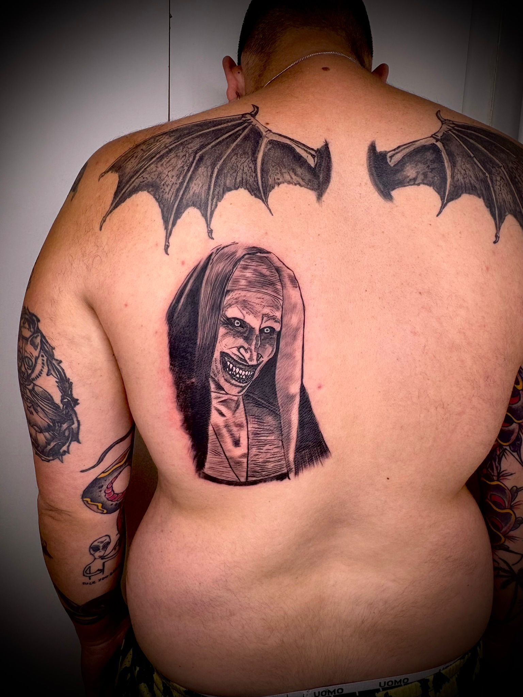
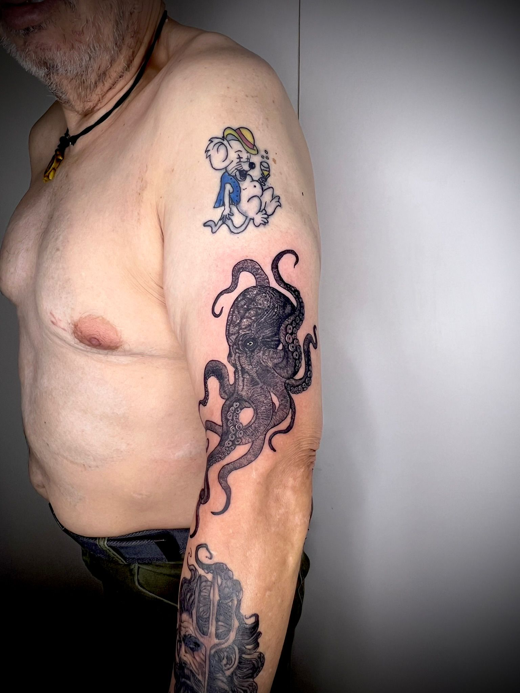
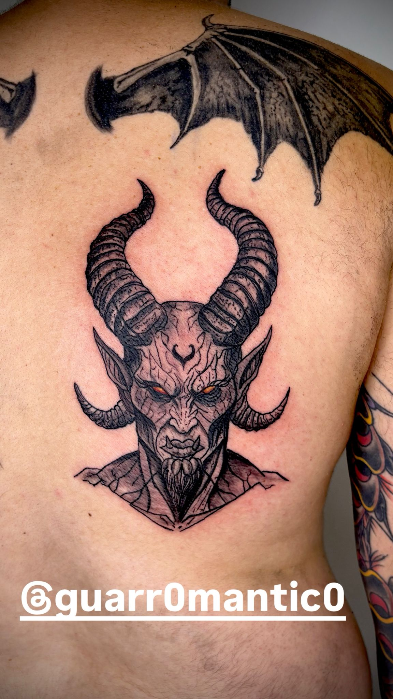
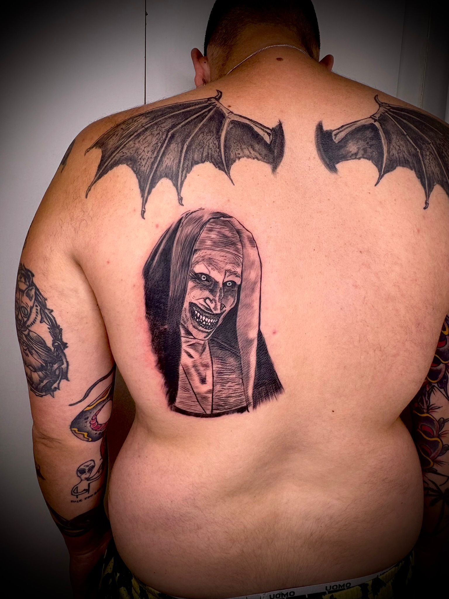
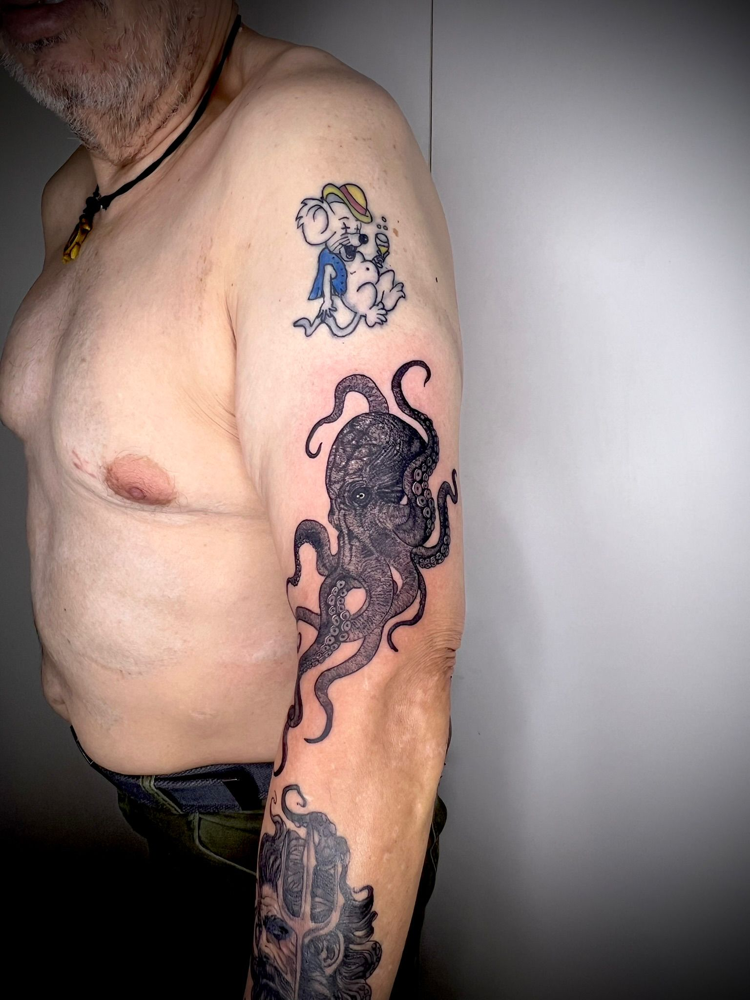

Estudio especializado en tatuajes de alta precisión, detalle y profundidad.
 





Con más de 8 años de experiencia, el tatuador de Lucus Tattoo domina las técnicas de micropuntillismo y realismo, creando piezas que combinan precisión, textura y expresión.
Cada proyecto se diseña respetando la anatomía, el estilo y la historia de cada persona, logrando tatuajes únicos y personalizados.
Campo Castelo – Plaza Mayor, Local #3, Lugo, Galicia
Instagram: @lucustattoo
Teléfono: +34 689 220 930